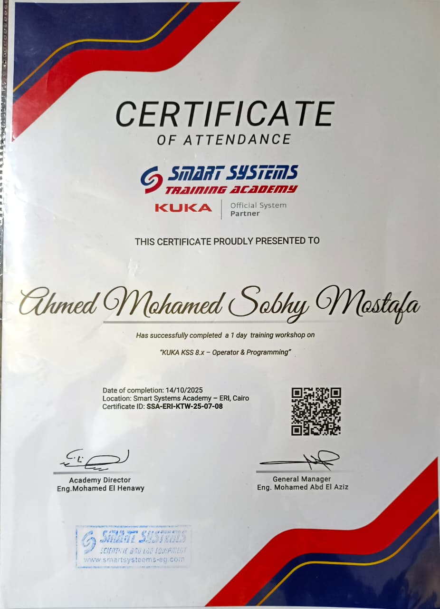

Exploring Industrial Robotics
The workshop gave me a great opportunity to explore how industrial robots are programmed, operated, and integrated into real production systems. Getting hands-on with a real KUKA robot was an incredible experience.